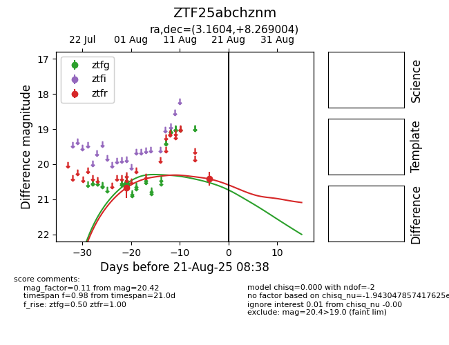

Target ZTF25abchznm at 2025-08-21 08:38, see:
FINK: fink-portal.org/ZTF25abchznm
Lasair: lasair-ztf.lsst.ac.uk/objects/ZTF25abchznm
ALeRCE: alerce.online/object/ZTF25abchznm
alt names
ZTF25abchznm (ztf,alerce)
coordinates:
equatorial (ra, dec) = (3.1604,+8.26900)
galactic (l, b) = (106.7033,-53.37589)
photometry
last ztfg=20.56, ztfr=20.42
1 ztfg, 2 ztfr detections
